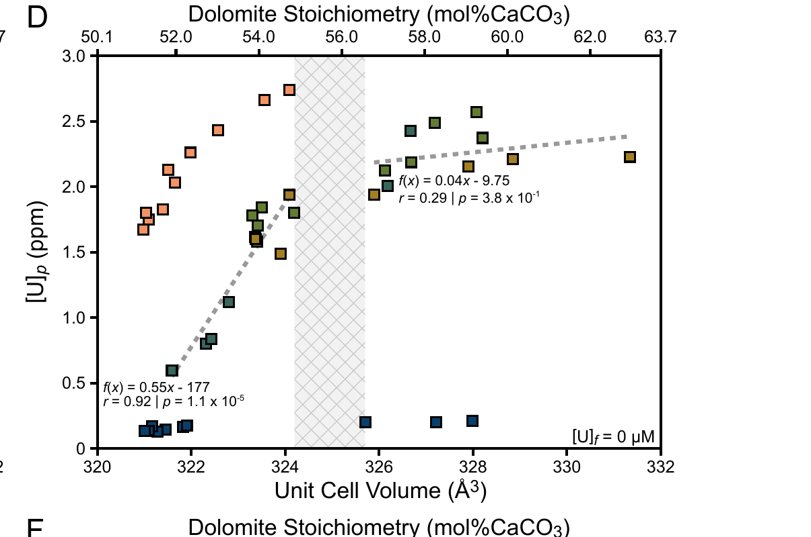

Experimental Proxy Calibration
Using laboratory dolomitization experiments to test — and correct — the geochemical proxies we use to reconstruct the redox state of ancient seawater.
Overview
Uranium and sulfur isotopes preserved in carbonate rocks are widely used to reconstruct the oxygenation history of the ancient oceans. But much of that carbonate rock has been altered into dolomite after burial, and it is not always clear whether dolomitization preserves the original seawater signal or distorts it. This research program tackles that problem directly: rather than inferring proxy behavior from natural samples alone, I run controlled, high-temperature dolomitization experiments in which a known fluid composition reacts with calcite to precipitate dolomite, so that the partitioning of trace elements and isotopes between fluid and mineral can be measured directly.
The current focus is on uranium: experimentally constraining how U(VI) partitions into dolomite as it forms, to determine whether the 238U/235U paleoredox proxy remains reliable in dolomitized rocks or requires correction. This experimental program — developed with Dr. Kimberly V. Lau and collaborators at Penn State and Michigan State — is expanding to calibrate additional proxies, including dolomite as an archive of seawater sulfate (δ34S) and a dual clumped-isotope (Δ47/Δ48) paleothermometer for dolomite, in collaboration with mentees Watts Dietrich and Isaac Bondzie-Selby.
Key Figure
